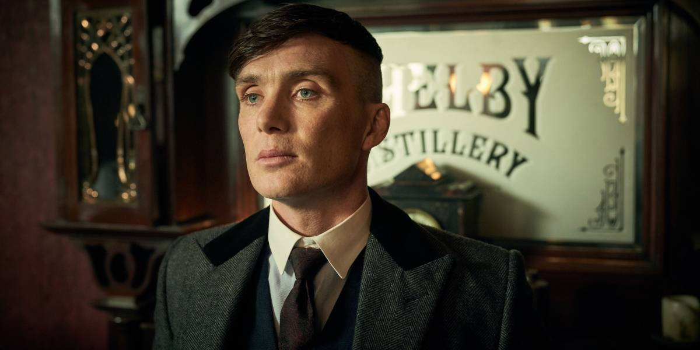
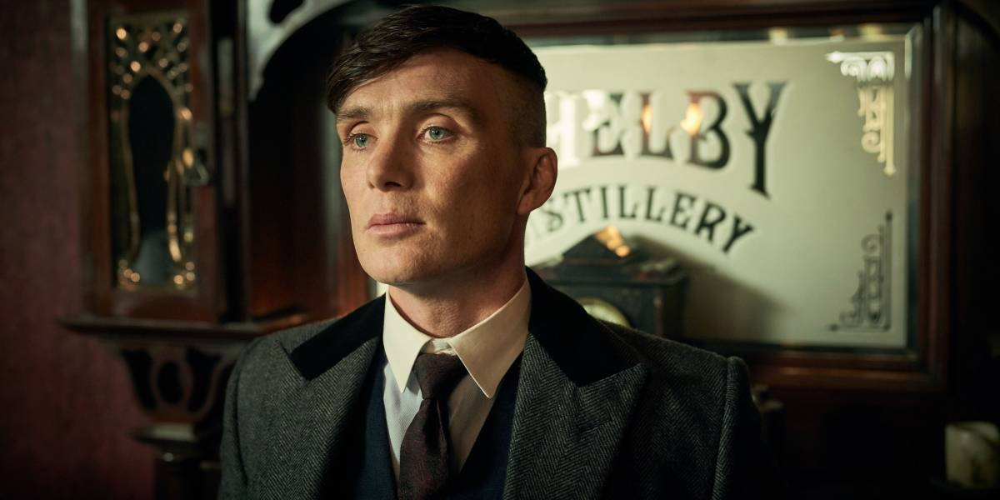
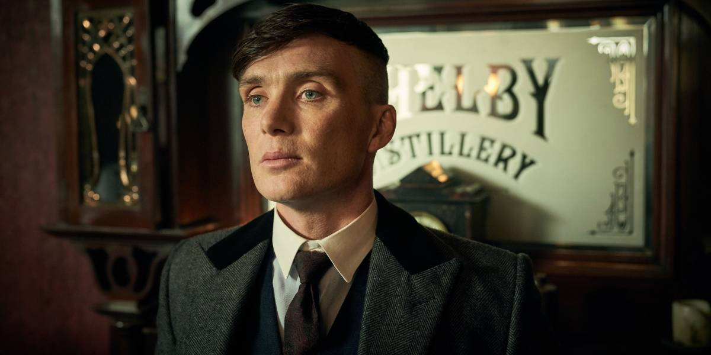
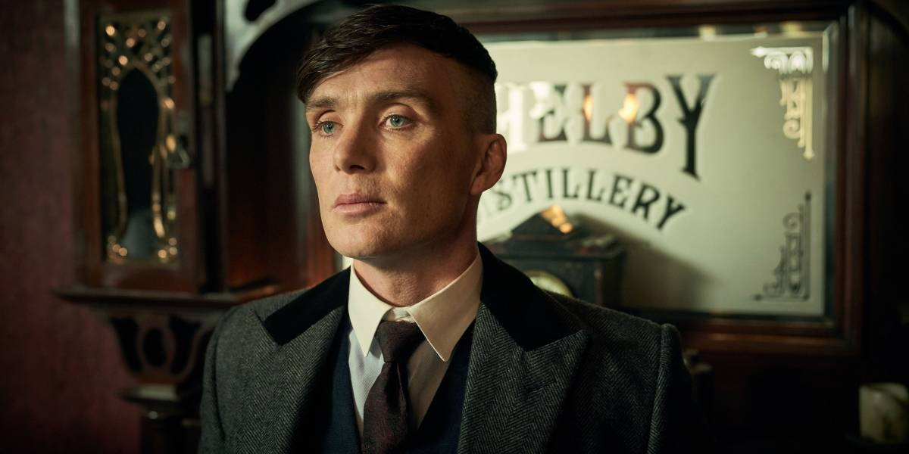

Peaky Blinders é uma série de TV britânica transmitida originalmente pela BBC Two. A história se passa na Grã-Bretanha em 1919 e acompanha a família Shelby, uma gangue cruel que prosperou após a Primeira Guerra Mundial, quando atividades do submundo, como o comércio ilegal de armas, esquema ilegal de aposta em corrida de cavalos, proteção e golpes de jogo se tornaram frequentes.
No elenco estão, Cillian Murphy, Paul Anderson, Helen McCrory, Sophie Rundle, Joe Cole, Harry Kirton, Finn Cole e Annabelle Wallis.
 
